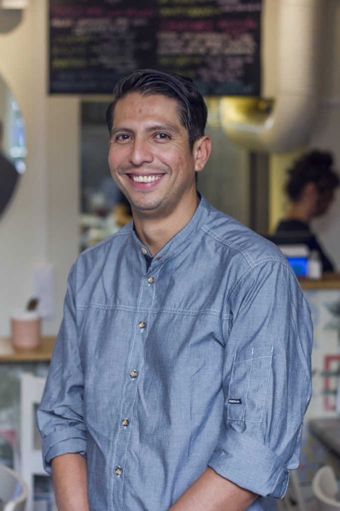

En kock från barnsben
Jonathan började arbeta hos en slaktare vid tio års ålder. Vid 17 öppnade han sin första taquería i Guadalajara – Mexikos kulinariska hjärta. Varje ingrediens har sin historia, varje rätt förtjänar respekt.
Denna tidiga erfarenhet formade hans syn på matlagning: inga genvägar, bara äkta smak och hantverkskunnande.

Äventyr i Karibien
Jonathan tog nästa steg till Holbox – en liten ö känd för avslappnad atmosfär och färska skaldjur. Där öppnade han en ny taquería som snabbt blev en lokal favorit.
Det var också på Holbox han mötte sin svenska fru. Tillsammans planerade de en framtid som skulle ta honom över Atlanten.

17 dagar till Xulo
Jonathan fick nycklarna till lokalen och på bara 17 dagar förvandlade han den till en fullt fungerande restaurang – målning, inredning, utrustning, meny, allt med egna händer.
Varför så snabbt? "Jag ville att folk skulle smaka på riktig mexikansk mat så fort som möjligt."
Allt lagas från grunden
Varje dag efter kl 16 gör Jonathan handgjorda majstortillas. Menyn är inte bara en lista med rätter – det är hans familjehistoria. Hans dotter älskar quesadillas. Hans fru, kärleksfullt kallad "La Güera", inspirerar säsongsrätterna.
Varje gäst som kliver in på Xulo får en smak av Guadalajara och en dos av den passion som drivit Jonathan sedan han var tio.